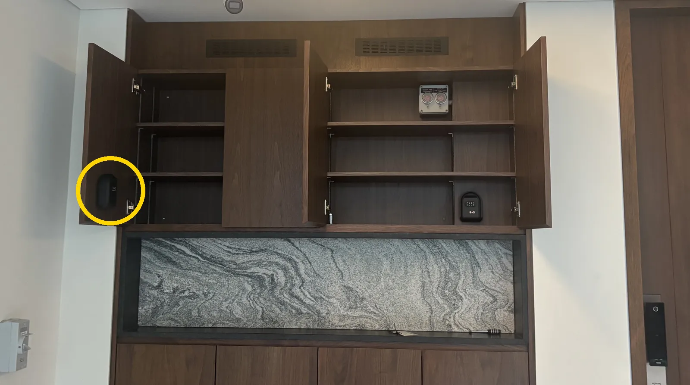

22 Jalan Elok

Locked out?
The spare key for the main door is in a lock box beside the door (circled in the photo).
- Open the left door of the upper cabinet beside the main door, outside the house.
- The lock box is on the inside of that door. Enter the lock box code we sent you before you moved in and take out the key.
- Unlock the main door with the key.
- Put the key back in the box straight away, close it and turn the number wheels so the code doesn’t show.
- Message Kevin to let us know, so we can check the lock.
Forgot the code? Send Kevin’s WhatsApp the phrase we gave you at move-in, or contact Kevin: WhatsApp · +65 8016 7691. Please don’t share this page or the code with anyone else.
被锁在门外？
大门的备用钥匙放在门旁边的一个密码锁盒里（照片中圈出的位置）。
- 打开屋外、大门旁边 上层柜子的左门。
- 锁盒装在 这扇门的内侧。输入 我们在您入住前发给您的锁盒密码，取出钥匙。
- 用钥匙打开大门。
- 马上把钥匙放回锁盒，关好，并 拨乱数字转轮，不要让密码露出来。
- 给 Kevin 发消息告诉我们，以便我们检查门锁。
忘记密码？把入住时我们告诉您的暗语发到 Kevin 的 WhatsApp，或直接联系 Kevin：WhatsApp · +65 8016 7691。请不要把这个页面或密码告诉任何其他人。
締め出されてしまったら
玄関ドアの予備の鍵は、ドアの横にあるキーボックスに入っています（写真の丸印）。
- 屋外、玄関ドア横の 上の棚の左扉 を開けてください。
- キーボックスは その扉の内側 にあります。ご入居前にお送りしたキーボックスの暗証番号 を合わせて、鍵を取り出してください。
- 鍵で玄関ドアを開けてください。
- 鍵はすぐにボックスに戻して閉め、暗証番号が見えないように ダイヤルを回して ください。
- ドアロックを点検しますので、Kevin にご連絡ください。
暗証番号をお忘れの場合は、入居時にお伝えした合言葉を Kevin の WhatsApp に送るか、Kevin に直接ご連絡ください：WhatsApp · +65 8016 7691。このページと暗証番号は、他の人に教えないでください。
¿Se ha quedado fuera?
La llave de repuesto de la puerta principal está en una caja de seguridad junto a la puerta (marcada con un círculo en la foto).
- Abra la puerta izquierda del mueble superior que hay junto a la puerta principal, fuera de la casa.
- La caja está en el interior de esa puerta. Introduzca el código de la caja que le enviamos antes de su entrada y saque la llave.
- Abra la puerta principal con la llave.
- Vuelva a dejar la llave en la caja enseguida, ciérrela y gire las ruedas de números para que no se vea el código.
- Escriba a Kevin para avisarnos y que revisemos la cerradura.
¿Ha olvidado el código? Envíe al WhatsApp de Kevin la frase que le dimos al entrar, o contacte con Kevin: WhatsApp · +65 8016 7691. No comparta esta página ni el código con nadie.
Enfermé dehors ?
La clé de secours de la porte d’entrée se trouve dans une boîte à clés à côté de la porte (entourée sur la photo).
- Ouvrez la porte gauche du meuble du haut, à côté de la porte d’entrée, à l’extérieur de la maison.
- La boîte est fixée à l’intérieur de cette porte. Composez le code de la boîte que nous vous avons envoyé avant votre arrivée et prenez la clé.
- Ouvrez la porte d’entrée avec la clé.
- Remettez tout de suite la clé dans la boîte, refermez-la et tournez les molettes pour que le code ne soit pas visible.
- Écrivez à Kevin pour nous prévenir, afin que nous vérifiions la serrure.
Code oublié ? Envoyez au WhatsApp de Kevin la phrase que nous vous avons donnée à votre arrivée, ou contactez Kevin : WhatsApp · +65 8016 7691. Ne partagez ni cette page ni le code avec qui que ce soit.